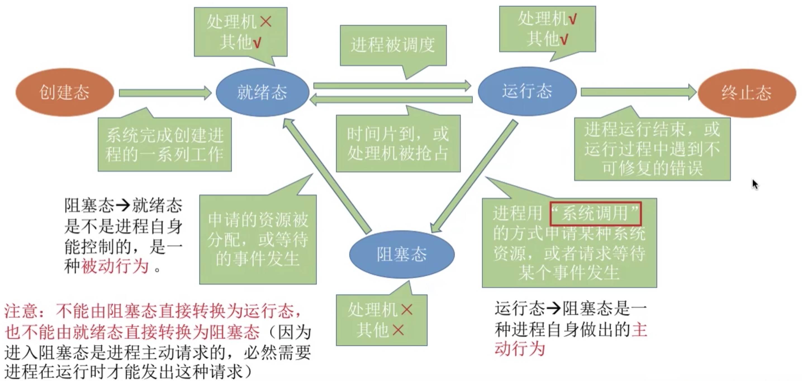

1 基础
什么是操作系统？
- 操作系统（Operating System，OS）是管理计算机硬件与软件资源的程序，是计算机的基石。
- 操作系统本质上是一个运行在计算机上的软件程序 ，用于管理计算机硬件和软件资源。 举例：运行在你电脑上的所有应用程序都通过操作系统来调用系统内存以及磁盘等等硬件。
- 操作系统存在屏蔽了硬件层的复杂性。操作系统就像是硬件使用的负责人，统筹着各种相关事项。
- 操作系统的内核（Kernel）是操作系统的核心部分，它负责系统的内存管理，硬件设备的管理，文件系统的管理以及应用程序的管理。内核是连接应用程序和硬件的桥梁，决定着系统的性能和稳定性。
系统调用
首先需要理解用户态和核心态。
- **用户态(user mode)**：用户态运行的进程可以直接读取用户程序的数据。
- **核心态(kernel mode)**：可以简单的理解系统态运行的进程或程序几乎可以访问计算机的任何资源，不受限制。
我们日常运行的程序基本都是运行在用户态，在这些用户态的程序中，凡是与系统态级别的资源有关的操作（如文件管理、进程控制、内存管理等)，都必须通过系统调用方式向操作系统提出服务请求，并由操作系统切换为核心态代为完成。
这些系统调用按功能大致可分为如下几类：
- 设备管理：完成设备的请求或释放，以及设备启动等功能。
- 文件管理：完成文件的读、写、创建及删除等功能。
- 进程控制：完成进程的创建、撤销、阻塞及唤醒等功能。
- 进程通信：完成进程之间的消息传递或信号传递等功能。
- 内存管理：完成内存的分配、回收以及获取作业占用内存区大小及地址等功能。
2 进程和线程
进程与线程的区别
程序指一个指令序列。进程（process）可以理解为程序的一次执行过程。
系统为每个运行的程序配置一个数据结构，称为进程控制块PCB，用来描述进程的各种信息（如程序代码存放位置）。程序段、数据段、PCB三部分组成进程实体（进程映像），PCB是进程存在的唯一标志！PCB主要包含的信息就是和进程相关的数据，创建进程实质上是创建进程实体中的PCB，撤销进程就是撤销进程实体中的PCB。进程也可以理解为进程实体的运行过程，是系统进行系统分配和调度的一个独立单位。
一个进程中可以有多个线程，线程（Thread）是一个基本的CPU执行单元，也是程序执行流的最小单位。引入线程后，不仅是进程之间可以并发，进程内的各线程之间也可以并发，进一步提升了系统的并发度。而且在引入线程后，进程只作为除CPU以外系统资源的分配单元，线程是调度（CPU资源分配）的基本单元。
进程状态
三种基本状态：
- 运行态（Running）：占有CPU，正在CPU上运行。单核环境下每一时刻最多只能有一个处于运行态的进程。
- 就绪态（Ready）：已经具备运行条件，但是没有空闲CPU，暂时不能运行。此时进程拥有除CPU以外的所有需要资源。一旦获得CPU执行权就立即进入运行态。
- 阻塞态（Waiting/Blocked）：因为等待某一事件，暂时不能运行。如等待操作系统分配打印机、等待读磁盘操作的结果等。
另外两种状态：
创建态（New）：进程正在被创建，操作系统为进程分配资源、初始化PCB。
终止态（Terminated）：进程正在从系统中撤销，操作系统会回收进程拥有的资源、撤销PCB。

进程间的通信方式
进程通信指进程之间的信息交换和传递。
进程是分配系统资源的单位，因此各进程拥有各自独立的内存空间。为了保证安全，一个进程不能直接访问另一个进程的地址空间，但是进程之间的信息交换又是必须的，操作系统提供了一些方法来保证进程间的安全通信。
- **管道/匿名管道(Pipes)**：其实就是内存中开辟的一个固定的缓冲区，用于具有亲缘关系的父子进程间或者兄弟进程之间的通信。管道只能采用半双工通信，各进程互斥访问管道。
- **有名管道(Names Pipes)**：匿名管道由于没有名字，只能用于亲缘关系的进程间通信。为了克服这个缺点，提出了有名管道。有名管道严格遵循先进先出(first in first out)。有名管道以磁盘文件的方式存在，可以实现本机任意两个进程通信。
- **信号(Signal)**：信号是一种比较复杂的通信方式，用于通知接收进程某个事件已经发生。
- **消息队列(Message Queuing)**：消息队列是消息的链表,具有特定的格式,存放在内存中并由消息队列标识符标识。管道和消息队列的通信数据都是先进先出的原则。与管道（无名管道：只存在于内存中的文件；有名管道：存在于实际的磁盘介质或者文件系统）不同的是消息队列存放在内核中，只有在内核重启(即，操作系统重启)或者显式地删除一个消息队列时，该消息队列才会被真正的删除。消息队列可以实现消息的随机查询,消息不一定要以先进先出的次序读取,也可以按消息的类型读取，比FIFO更有优势。消息队列克服了信号承载信息量少，管道只能承载无格式字节流以及缓冲区大小受限等缺点。
- **信号量(Semaphores)**：信号量是一个计数器，用于多进程对共享数据的访问，信号量的意图在于进程间同步。这种通信方式主要用于解决与同步相关的问题并避免竞争条件。
- **共享内存(Shared memory)**：使得多个进程可以访问同一块内存空间，不同进程可以及时看到对方进程中对共享内存中数据的更新。这种方式需要依靠某种同步操作，如互斥锁和信号量等。可以说这是最有用的进程间通信方式。
- **套接字(Socket)**：此方法主要用于在客户端和服务器之间通过网络进行通信。套接字是支持 TCP/IP 的网络通信的基本操作单元，可以看做是不同主机之间的进程进行双向通信的端点，简单的说就是通信的两方的一种约定，用套接字中的相关函数来完成通信过程。
线程间的同步的方式
同步指为完成某种任务而建立的两个或更多进程之间因为需要在某些位置上协调工作次序或共享关键资源而产生的制约关系。
线程同步的方式主要有：
- **互斥量(Mutex)**：采用互斥对象机制，只有拥有互斥对象的线程才有访问公共资源的权限。因为互斥对象只有一个，所以可以保证公共资源不会被多个线程同时访问。比如Java中的synchronized关键词和各种Lock都是这种机制。
- **信号量(Semaphore)**：它允许同一时刻多个线程访问同一资源，但是需要控制同一时刻访问此资源的最大线程数量。
- **事件(Event)**：Wait/Notify。通过通知操作的方式来保持多线程同步，还可以方便的实现多线程优先级的比较操作。
进程调度算法
- **先来先服务(FCFS)**：从就绪队列中选择一个最先进入该队列的进程为之分配资源，使它立即执行并一直执行到完成或发生某事件而被阻塞放弃占用CPU时再重新调度。
- **短作业优先(SJF)**：从就绪队列中选出一个估计运行时间最短的进程为之分配资源，使它立即执行并一直执行到完成或发生某事件而被阻塞放弃占用 CPU 时再重新调度。
- **时间片轮转调(Round robin RR)**：时间片轮转调度是一种最古老，最简单，最公平且使用最广的算法。每个进程被分配一个时间段，称作它的时间片，即该进程允许运行的时间。
- 优先级调度：为每个流程分配优先级，首先执行具有最高优先级的进程，依此类推。具有相同优先级的进程以FCFS方式执行。可以根据内存要求，时间要求或任何其他资源要求来确定优先级。
- 多级反馈队列：前面介绍的几种进程调度的算法都有一定的局限性。如短进程优先的调度算法，仅照顾了短进程而忽略了长进程。多级反馈队列调度算法既能使高优先级的作业得到响应又能使短作业迅速完成，因而它是目前被公认的一种较好的进程调度算法，UNIX操作系统采取的便是这种调度算法。
死锁
死锁描述的是各进程互相等待对方手里的资源，导致各个进程都阻塞，无法向前推进的现象。
死锁产生的必要条件：
- 互斥条件：只有对必须互斥使用资源的争抢才会导致死锁。
- 不剥夺条件：进程所获得资源在未使用完之前，不能由其他进程强行夺走，只能主动释放。
- 请求保持条件：进程已经持有了至少一个资源，但又提出新的资源请求，而该资源被其他进程占有，此时请求不成功被阻塞，但是仍不放弃自己已持有的资源。
- 循环等待资源：存在一种进程资源的循环等待链。
死锁的处理策略：
预防死锁。破坏死锁产生的四个必要条件中的一个或几个。
避免死锁。用某种算法防止系统进入不安全可能死锁的状态。
死锁的检测和解除。允许死锁发生，但是OS要负责监测出死锁的发生并采取措施解决。
预防死锁
- 破坏互斥条件
如果把只能互斥使用的资源改造为允许共享使用，就不会进入死锁，比如SPOOLing技术。
缺点：并不是所有资源都能改造为共享使用资源，而且为了系统安全很多时候还必须保护互斥性，因此破坏互斥条件大多是不现实的。
- 破坏不剥夺条件
方案一：当某个进程请求新资源得不到满足时，必须立即释放持有的所有资源，待以后需要再重新申请。
方案二：当某个进程请求的资源被其他进程占有时，操作系统可以协助将想要的资源强行剥夺。
缺点：
- 实现复杂；
- 释放已获得资源可能导致前一阶段的工作失效，因此这种方法一般只适用于易保存和恢复状态的资源，比如CPU；
- 反复申请和释放资源会增加系统开销；
- 方案一还会导致进程饥饿。
- 破坏请求保持条件
可以采用静态分配方法：进程在运行前一次性申请完所需要的全部资源，得不到满足就先不投入运行，投入运行后保持对资源的占有，且不再申请新的资源。
缺点：进程运行期间对资源持续占有会使资源利用率变得极低，长时间运行的进程还可能导致其他一直申请不到资源的进程饥饿。
- 破坏循环等待条件
可以采用顺序资源分配法：给系统资源编号，规定每个进程必须按编号递增的顺序请求资源，同类（编号相同）资源一次申请完。
原理：占有小编号资源的进程才有资格申请大编号，占有大编号资源的进程不会逆向回来申请小编号资源，从而避免了循环等待。
缺点：
- 不方便增加设备，需要对所有设备重新编号；
- 进程实际使用资源顺序和资源编号顺序不可能完全一致，先申请用不到的资源会让资源长时间空闲，降低利用率；
- 必须按编号递增申请还使得编程困难，不同机器上还得修改代码中资源编号和申请顺序。
避免死锁
安全序列指系统按照一种顺序分配资源，使每个进程都能顺利完成。只要能找出一个安全序列，系统就是安全状态；如果分配资源后系统找不到任何一个安全序列，系统就进入不安全状态，可能会产生死锁。
银行家算法（Banker’s Algorithm）由Dijkstra为银行系统设计，后用于操作系统来避免死锁。在进程提出资源申请时，先预判此次分配是否会导致系统进入不安全状态。如果会进入不安全状态就暂时拒绝此次申请，让该进程阻塞等待。
死锁的避免(银行家算法)改善解决了资源使用率低的问题，但是它要不断地检测每个进程对各类资源的占用和申请情况，以及做安全性检查，需要花费较多的时间。
死锁的检测和解除
使用数据结构：进程-资源分配图：
- 两种节点：进程节点，资源节点。
- 两种边：进程节点 -> 资源节点（表示进程想申请的资源数量），资源节点 -> 进程节点（表示已经为进程分配的资源数量）。
检测步骤：
- 如果进程-资源分配图中无环路，则此时系统没有发生死锁；
- 如果进程-资源分配图中有环路，且每个资源类仅有一个资源，则系统中已经发生了死锁；
- 如果进程-资源分配图中有环路，且涉及到的资源类有多个资源，此时系统未必会发生死锁；
- 如果能在进程-资源分配图中找出一个既不阻塞又非独立的进程，该进程能够在有限的时间内归还占有的资源，也就是把边给消除掉了，重复此过程，直到能在有限的时间内消除所有的边，则不会发生死锁，否则会发生死锁。
死锁的解除方法有：
- 资源剥夺法。挂起（暂时放到外存上）某些死锁进程，并抢占它的资源，将这些资源分配给其它死锁进程，但是要防止被挂起的进程长时间得不到资源而饥饿。
- 撤销进程法。强制撤销部分、甚至全部死锁进程，并剥夺这些进程的资源。优点是实现简单，但所付出的代价可能会很大。因为有些进程可能已经运行了很长时间，接近结束了，一旦被终止功亏一篑。
- 进程回退法。让一个或多个死锁进程回退到足以避免死锁的地步。要求系统记录进程的历史信息，设置还原点。
3 内存管理
内存管理的主要工作
- 操作系统负责内存空间的分配与回收。
- 操作系统提供某种技术从逻辑上对内存空间进行扩充。
- 操作系统提供地址转换功能，负责程序的逻辑地址与物理地址的转换。
- 操作系统提供保护功能，保证各个进程个在各自存储空间内运行，互不干扰。
常见的几种内存管理机制
简单分为连续分配管理方式和非连续分配管理方式这两种。
- 连续分配管理方式是指为一个用户程序分配一个连续的内存空间，常见的如块式管理。
- 同样地，非连续分配管理方式允许一个程序使用的内存分布在离散或者说不相邻的内存中，常见的如页式管理和段式管理。
块式管理：远古时代的计算机操作系统的内存管理方式。将内存分为几个固定大小的块，每个块中只包含一个进程。如果程序运行需要内存的话，操作系统就分配给它一块，如果程序运行只需要很小的空间的话，分配的这块内存很大一部分几乎被浪费了。这些在每个块中未被利用的空间，我们称之为碎片。
页式管理：把主存分为大小相等且固定的一页一页的形式，页较小，相比于块式管理的划分粒度更小，提高了内存利用率，减少了碎片。页式管理通过页表对应逻辑地址和物理地址。
段式管理：页式管理虽然提高了内存利用率，但是页式管理其中的页并无任何实际意义。段式管理把主存分为一段段的，段是有实际意义的，每个段定义了一组逻辑信息，例如，有主程序段MAIN、子程序段X、数据段D及栈段S等。段式管理通过段表对应逻辑地址和物理地址。
段页式管理：分页管理内存空间利用率高，但不方便按照逻辑模块实现信息的共享和保护，分段管理可以按逻辑模块分配内存但是段长过大时分配连续空间不太现实，也会产生外部碎片。因此将分段和分页结合形成段页式管理，即先分段，段内又分为若干页，因此段与段和段内部都是非连续分配的空间了。
快表和多级页表
在分页内存管理中，很重要的两点是：
- 虚拟地址到物理地址的转换要快。
- 要解决虚拟地址空间大，页表也会很大的问题。
为了提高虚拟地址到物理地址的转换速度，操作系统在页表方案基础之上引入了快表（又称为联想寄存器TLB）来加速虚拟地址到物理地址的转换。我们可以把快表理解为一种特殊的高速缓冲存储器（Cache），其中的内容是页表的一部分或者全部内容。作为页表的Cache，它的作用与页表相似，但是提高了访问速率。由于采用页表做地址转换，读写内存数据时CPU要访问两次主存，有了快表，有时只要访问一次高速缓冲存储器，一次主存，这样可加速查找并提高指令执行速度。
使用快表之后的地址转换流程是这样的：
- 根据虚拟地址中的页号查快表；
- 如果该页在快表中，直接从快表中读取相应的物理地址；
- 如果该页不在快表中，就访问内存中的页表，再从页表中得到物理地址，同时将页表中的该映射表项添加到快表中；
- 当快表填满后，又要登记新页时，就按照一定的淘汰策略淘汰掉快表中的一个页。
此外，引入多级页表的主要目的是为了避免把全部页表一直放在内存中占用过多空间，特别是那些根本就不需要的页表就不需要保留在内存中，多级页表属于时间换空间的典型场景。
分页机制和分段机制的异同
共同点：
- 分页机制和分段机制都是为了提高内存利用率，减少内存碎片。
- 不同的页和段都是离散存储的，所以两者都是离散分配内存的方式。但是，每个页和段中的内存是连续的。
区别：
- 页的大小是固定的，由操作系统决定；而段的大小不固定，取决于我们当前运行的程序。
- 分页仅仅是为了满足操作系统内存管理的需求，而段是逻辑信息的单位，在程序中可以体现为代码段，数据段，能够更好满足用户的需要。
逻辑(虚拟)地址和物理地址
我们编程一般只有可能和逻辑地址打交道，比如在C语言中，指针里面存储的数值就可以理解成为内存里的一个地址，这个地址也就是我们说的逻辑地址，逻辑地址由操作系统决定。物理地址指的是真实物理内存中地址，更具体一点来说就是内存地址寄存器中的地址。物理地址是内存单元真正的地址。
CPU寻址和虚拟地址空间
现代处理器使用的是一种称为虚拟寻址(Virtual Addressing)的寻址方式。使用虚拟寻址，CPU需要将虚拟地址翻译成物理地址，这样才能访问到真实的物理内存，实际上完成虚拟地址转换为物理地址转换的硬件是CPU中含有一个被称为内存管理单元（Memory Management Unit, MMU）的硬件。
为什么要有虚拟地址空间呢？没有虚拟地址空间的时候，程序直接访问和操作的都是物理内存，因此用户程序可以访问任意内存，寻址内存的每个字节，这样就很容易破坏操作系统，造成操作系统崩溃；同时，想要同时运行多个程序特别困难，比如想同时运行一个微信和一个QQ音乐都不行，比如微信在运行的时候给内存地址1xxx赋值后，QQ音乐也同样给内存地址1xxx赋值，那么QQ音乐对内存的赋值就会覆盖微信之前所赋的值，这就造成了微信这个程序就会崩溃。
总结来说，如果直接把物理地址暴露出来的话会带来严重问题，比如可能对操作系统造成伤害以及给同时运行多个程序造成困难，但是通过虚拟地址访问内存有以下优势：
- 程序可以使用一系列相邻的虚拟地址来访问物理内存中不相邻的大内存缓冲区。
- 程序可以使用一系列虚拟地址来访问大于可用物理内存的内存缓冲区。当物理内存的供应量变小时，内存管理器会将物理内存页（通常大小为 4 KB）保存到磁盘文件（页面置换），数据或代码页会根据需要在物理内存与磁盘之间移动。
- 不同进程使用的虚拟地址彼此隔离。一个进程中的代码无法更改正在由另一进程或操作系统使用的物理内存。
虚拟内存
含义
很多时候我们使用了很多占内存的软件，这些软件占用的内存可能已经远远超出了我们电脑本身具有的物理内存，这正是因为**虚拟内存(Virtual Memory)**的存在。
局部性原理是虚拟内存技术的基础，正是因为程序运行具有局部性原理，才可以只装入部分程序到内存就开始运行。局部性原理表现在以下两个方面：
- 时间局部性：如果程序中的某条指令一旦执行，不久以后该指令可能再次执行；如果某数据被访问过，不久以后该数据可能再次被访问。产生时间局部性的典型原因是由于在程序中存在着大量的循环操作。
- 空间局部性：一旦程序访问了某个存储单元，在不久之后，其附近的存储单元也将被访问。即程序在一段时间内所访问的地址，可能集中在一定的范围之内，这是因为指令通常是顺序存放、顺序执行的，数据也一般是以向量、数组、表等形式簇聚存储的。
时间局部性是通过将近来使用的指令和数据保存到高速缓存的存储器中，并使用高速缓存的层次结构实现。空间局部性通常是使用较大的高速缓存，并将预取机制集成到高速缓存控制逻辑中实现。虚拟内存技术实际上就是建立了「内存一外存」的两级存储器的结构，利用局部性原理实现髙速缓存。
基于局部性原理，在程序装入时，可以将程序的一部分装入内存，而将其他部分留在外存，就可以启动程序执行。由于外存往往比内存大很多，所以我们运行的软件的内存大小实际上是可以比计算机系统实际的内存大小大的。在程序执行过程中，当所访问的信息不在内存时，由操作系统将所需要的部分调入内存，然后继续执行程序。另一方面，操作系统将内存中暂时不使用的内容换到外存上，从而腾出空间存放将要调入内存的信息。这样，计算机好像为用户提供了一个比实际内存大得多的存储器——虚拟存储器。
通过虚拟内存可以让程序拥有超过系统物理内存大小的可用内存空间。另外，虚拟内存为每个进程提供了一个一致的、私有的地址空间，它让每个进程产生了一种自己在独享主存的错觉（每个进程拥有一片连续完整的内存空间）。这样会更加有效地管理内存并减少出错。
实际上，虚拟内存技术可以理解为时间换空间的技术，用CPU的计算时间，页的调入调出花费的时间，换来了一个虚拟的更大的空间来支持程序的运行。
技术实现
虚拟内存的实现需要建立在离散分配的内存管理方式的基础上。虚拟内存的实现有以下三种方式：
- 请求分页存储管理：建立在分页管理之上，为了支持虚拟存储器功能而增加了请求调页功能和页面置换功能。请求分页是目前最常用的一种实现虚拟存储器的方法。请求分页存储管理系统中，在作业开始运行之前，仅装入当前要执行的部分段即可运行。假如在作业运行的过程中发现要访问的页面不在内存，则由处理器通知操作系统按照对应的页面置换算法将相应的页面调入到主存，同时操作系统也可以将暂时不用的页面置换到外存中。
- 请求分段存储管理：建立在分段存储管理之上，增加了请求调段功能、分段置换功能。请求分段储存管理方式就如同请求分页储存管理方式一样。
- 请求段页式存储管理
不管是上面哪种实现方式，我们一般都需要：
- 一定容量的内存和外存：在载入程序的时候，只需要将程序的一部分装入内存，而将其他部分留在外存，然后程序就可以执行了；
- 缺页中断：如果需执行的指令或访问的数据尚未在内存（称为缺页或缺段），则由处理器通知操作系统将相应的页面或段调入到内存，然后继续执行程序；
- 虚拟地址空间 ：逻辑地址到物理地址的变换。
页面置换算法
当发生缺页中断时，如果当前内存中并没有空闲的页面，操作系统就必须在内存选择一个页面将其移出内存，以便为即将调入的页面让出空间。用来选择淘汰哪一页的规则叫做页面置换算法，我们可以把页面置换算法看成是淘汰页面的规则。
- OPT（最佳页面置换算法）：最佳(Optimal, OPT)置换算法所选择的被淘汰页面将是以后永不使用的，或者是在最长时间内不再被访问的页面,这样可以保证获得最低的缺页率。但由于人们目前无法预知进程在内存下的若千页面中哪个是未来最长时间内不再被访问的，因而该算法无法实现。
- FIFO（First In First Out）：先进先出页面置换算法，总是淘汰最先进入内存的页面，即选择在内存中驻留时间最久的页面进行淘汰。
- LRU（Least Recently Used）：最近最久未使用页面置换算法，LRU算法赋予每个页面一个访问字段，用来记录一个页面自上次被访问以来所经历的时间T，当须淘汰一个页面时，选择现有页面中其T值最大的，即最近最久未使用的页面予以淘汰。
- LFU（Least Frequently Used）：最少使用页面置换算法，该置换算法选择在之前时期使用最少的页面作为淘汰页。